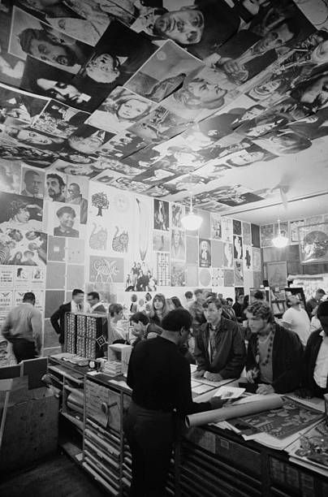

Jeden zweiten Freitag im Monat
Die Open Music Night ist ein offenes Veranstaltungsformat bei No Future Records, das den gemeinsamen Austausch über Musik in den Mittelpunkt stellt. Sie richtet sich an alle, die sich für Punk, Metal und verwandte Genres interessieren – unabhängig von musikalischer Vorerfahrung oder Szenezugehörigkeit. Im Rahmen der Open Music Night besteht die Möglichkeit, Musik zu hören, neue Veröffentlichungen zu entdecken und sich über Bands, Alben und Einflüsse auszutauschen. Besucherinnen und Besucher können eigene Platten oder CDs mitbringen und vorstellen oder einfach zuhören und neue Impulse mitnehmen. Im Vordergrund steht nicht die Performance, sondern das gemeinsame Erleben von Musik. Die Open Music Night soll einen Raum schaffen, in dem Musik verbindet, Gespräche entstehen und unterschiedliche Perspektiven aufeinandertreffen. Damit knüpft die Veranstaltung direkt an die Philosophie von No Future Records an, Musik als kulturelles Gut und verbindendes Element zu verstehen.
